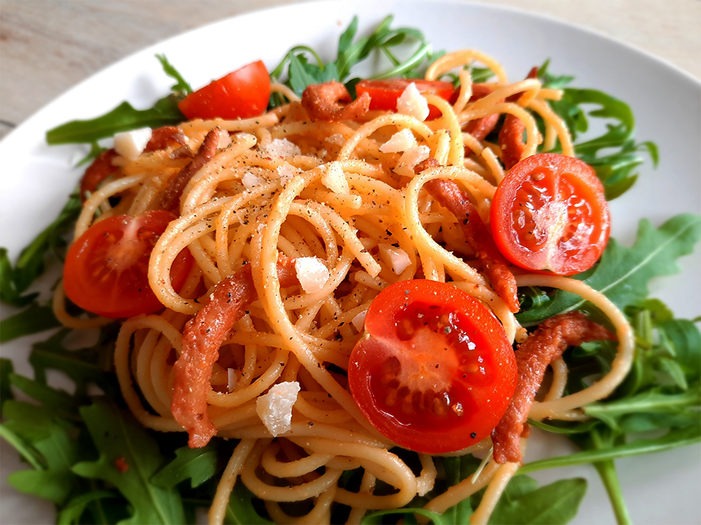

coq au vin

cubanos

hutspot uit eigen land

amerikaanse caesar salade

paddenstoelenrisotto
salade met gegrilde ananas

biefstuk chimichurri & gegrilde groenten

avocado salade

italiaanse caponata

chili sin carne met guacamole

chorizosoep

spaghetti carbonara

Bereidingsduur: 30 minuten
Aantal personen: 2
Ingrediënten:
200 gram spaghetti
100 gram vegetarische spekjes
1 teentje knoflook
1 takje peterselie
50 gram parmezaanse kaas
2 eieren
50 gram rucola sla
100 gram cherry tomaatjes
naar smaak peper en zout
200 gram spaghetti
100 gram vegetarische spekjes
1 teentje knoflook
1 takje peterselie
50 gram parmezaanse kaas
2 eieren
50 gram rucola sla
100 gram cherry tomaatjes
naar smaak peper en zout
Instructies:
1. Rasp de kaas en halveer de cherry tomaatjes. Bak de spekjes tot deze krokant zijn.
2. Kook spaghetti met wat zout en olijfolie in ongeveer 8 minuten al dente.
3. Pers de knoflook en bak kort met spekjes mee.
4. Pak een kom en klop hierin de eieren los. Roer de geraspte kaas en zwarte peper er doorheen.
5. Giet de spaghetti af en doe weer terug in de pan. Er mag nog wat kookvocht bij zitten. Giet het ei kaasmengsel erbij en blijf roeren zodat het ei niet stolt. Schep de spekjes en knoflook erdoorheen.
6. Leg de rucola op de borden. Verdeel hierover de spaghetti. Garneer met nog een beetje kaas, peterselie, peper en de tomaatjes.
1. Rasp de kaas en halveer de cherry tomaatjes. Bak de spekjes tot deze krokant zijn.
2. Kook spaghetti met wat zout en olijfolie in ongeveer 8 minuten al dente.
3. Pers de knoflook en bak kort met spekjes mee.
4. Pak een kom en klop hierin de eieren los. Roer de geraspte kaas en zwarte peper er doorheen.
5. Giet de spaghetti af en doe weer terug in de pan. Er mag nog wat kookvocht bij zitten. Giet het ei kaasmengsel erbij en blijf roeren zodat het ei niet stolt. Schep de spekjes en knoflook erdoorheen.
6. Leg de rucola op de borden. Verdeel hierover de spaghetti. Garneer met nog een beetje kaas, peterselie, peper en de tomaatjes.